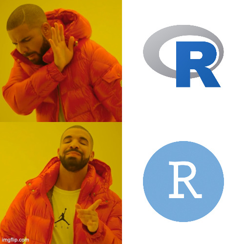
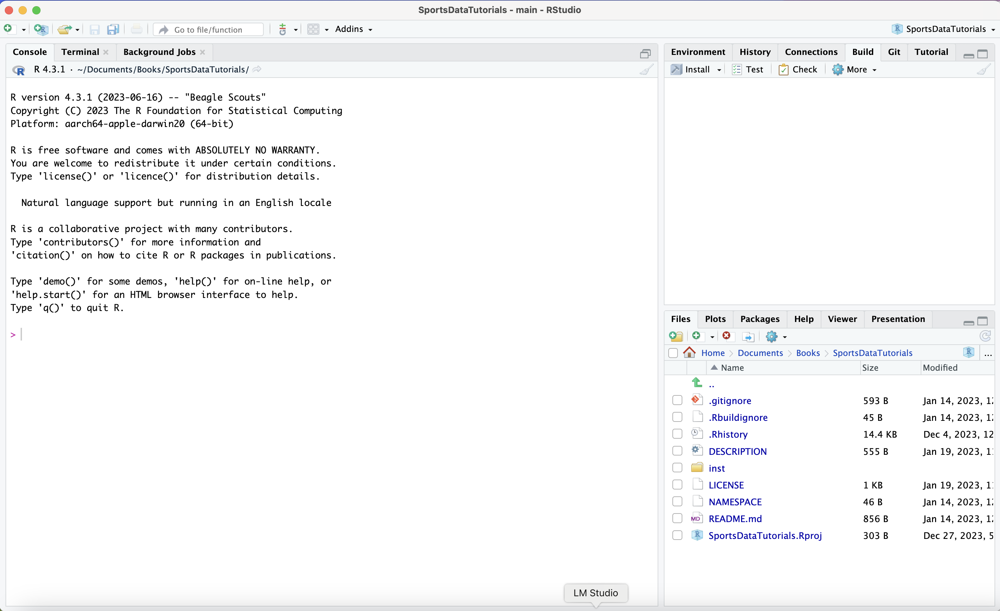
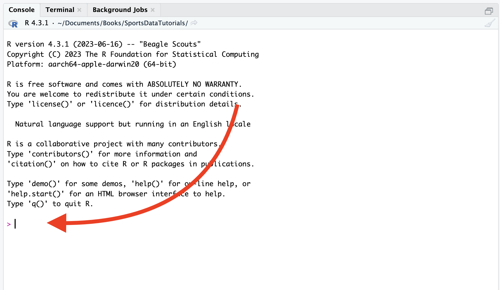
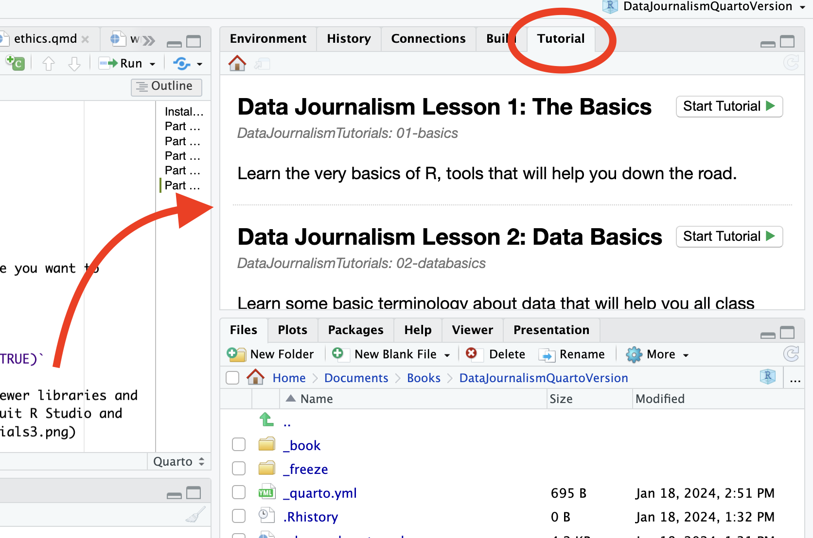

Installations
The Art of Data Journalism is an interactive, locally-aware textbook that runs entirely in R Studio, a free development environment for the statistical programming language R. Right now, that might not mean much to you, but it will.
The good news is all of this is free. It will work on Mac or Windows alike. And it doesn’t require an ultramodern machine. But getting it all set up takes a bit of work.
Part 1: Update your operating system
While not required to make this work, it’s good practice. My experience with undergraduate students is that they don’t update their machines. Some ever. You should do this, often.
On a Mac, it’s in your System Settings under the General tab. You’ll find Software Update there.
On Windows, use the Cortana search bar and search for windows update.
If you haven’t done this in a while, it could take a bit of time. It’s worth it. Things will run smoother.
Part 2: Install R and R Studio
Go here. Go to Step 1 and click Download and Install R
If you’re on a Mac, click on Download R for MacOS. If you have a newer Mac with an M series chip, you want the arm64 version. If you’re on an older Mac with an Intel chip, you want the X86_64 version.
If you’re on Windows, install the base package AND install Rtools. When either downloads, run the executable and accept the defaults and license agreement.
Go back to here. Go to Step 2 and click R Studio Desktop for your version.
Mac users:
 That will put R Studio into your Applications folder where you can find it and launch it.
That will put R Studio into your Applications folder where you can find it and launch it.
Windows users:
You can find it by typing RStudio into the Cortana search.
NOTE: This process will add two icons to your computer. One is the R language app. One is R Studio. You will only use R Studio. Or, memefied …

Part 3: Installing R libraries
- Open R Studio. It should show the Console view by default. We’ll talk a lot more about the console later.
- Copy and paste this into the console and hit enter:
install.packages(c("tidyverse", "learnr", "gradethis", "janitor", "lubridate", "remotes", "devtools", "waffle", "ggrepel", "ggbeeswarm", "ggbump", "ggalt", "ggtext", "refinr", "gt"))
Part 4: Install the tutorials
To get the tutorials, do the following.
- Open R Studio.

- R Studio defaults to the console view. This is good, This is where you want to be.

In the console, enter the following:
devtools::install_github("The-Art-of-Data-Journalism/DataJournalismTutorials", force=TRUE)You should see some automated output. If you are told there are newer libraries and asked if you want to install them, just hit enter (which means do nothing). When it is done, quit R Studio and restart it. This is what it will look like when done.

Remember: You only need to do these installation steps once. After everything is installed, you can just open RStudio and access the tutorials from the Tutorial tab.